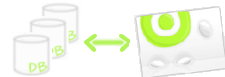

|
Multiple Database Support

| One Application inOpen-jACOB can access multiple and different kind of databases at the same time and in the same UI without any line of code. The data source could be a persistent store like an RDBMS, an external service like a B2B exchange or a repository like an LDAP database. The business component that relies on the Open-jACOB data access layer uses the simpler interface exposed by the data layer for its clients. The data layer completely hides the data source implementation details from its clients. Because the interface exposed by the data layer to clients does not change when the underlying data source implementation changes, this pattern allows to adapt to different storage schemes without affecting its clients or business components. |
|
Database Reconfigure
| The deployment of a new application version sometimes requires the reconfiguration of the data sources assigned to the application. This is the case if the structure of the data sources is not in line with the structure expected by the application. You can reconfigre the database in the administration application of Open-jACOB neither with any line of SQL nor the user must logout to the current session. This is hot. |
|
Query by Example (QBE) is a powerful
search method that allows anyone to search a system for document(s) by entering an element such as a text string,
document name, dates, date ranges,... quickly searching through the DB to match your entered criteria. This functionality is provide by the engine and needs no SQL. | |
|
WebDav

| Open-jACOB provides WebDAV support that allows people to "author and edit content via browser or any WebDAV-compliant tool like MS Word or PowerPoint, and enjoy full web publishing features like version control and ubiquitous delivery". . |
Buildin Features of Open-jACOBCore Engine Rule Engine Reporting Designer DB-Layer UI |
 Contact: info AT openjacob DOT org
|